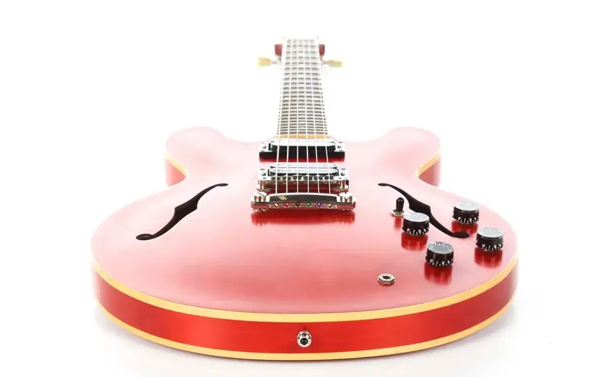
The Gibson ES-333 was launched in 2002 as a minimalist, stripped back version of the venerable ES-335. It had a thin satin finish, silkscreen headstock logo with no inlays, and no pickup covers or pickguard.
The sound was certainly not stripped back though – the 490R and 498T humbucker pickups made sure the ES-333 packed a punch.
The lower price and limited production run has made the ES-333 a sought after guitar that's well worth seeking out. Scroll down to find out more about this special instrument.
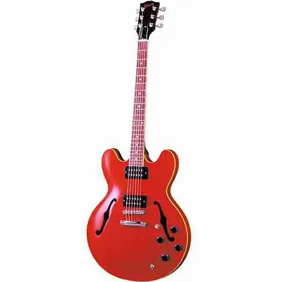
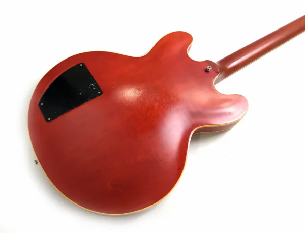
Instead of the typical Classic 57 pickups, the ES-333 uses the 490R and 498T in the neck and bridge positions. It retains the standard 3-way selector switch and two-volume, two-tone controls.
One welcome feature is the access panel in the back of the body. This was carried over from the ES-335 studio of the 1990’s. It’s interesting that Gibson included this, considering the ES-333’s position as a no-frills, stripped back ES, but it makes repairs and modifications to the electronics much easier, so it’s no bad thing.
At the time the RRP was $1200, but they were often reduced to less than $1000, and represented a great deal. The cream binding, thin nitro finish, and mint-green tuner heads gave the guitar the look and feel of a vintage instrument, at a time when the standard ES-335 came with bright white binding, and there were no “vintage reissue” models.
The Les Paul pickups really pack a punch, with a brighter and hotter tone compared to the usual Classic 57’s, they are best suited to overdriven rock and blues tones. But, if they’re not to your taste, they can be swapped out easily. Using pure nickel strings helps take the edge off them a little.
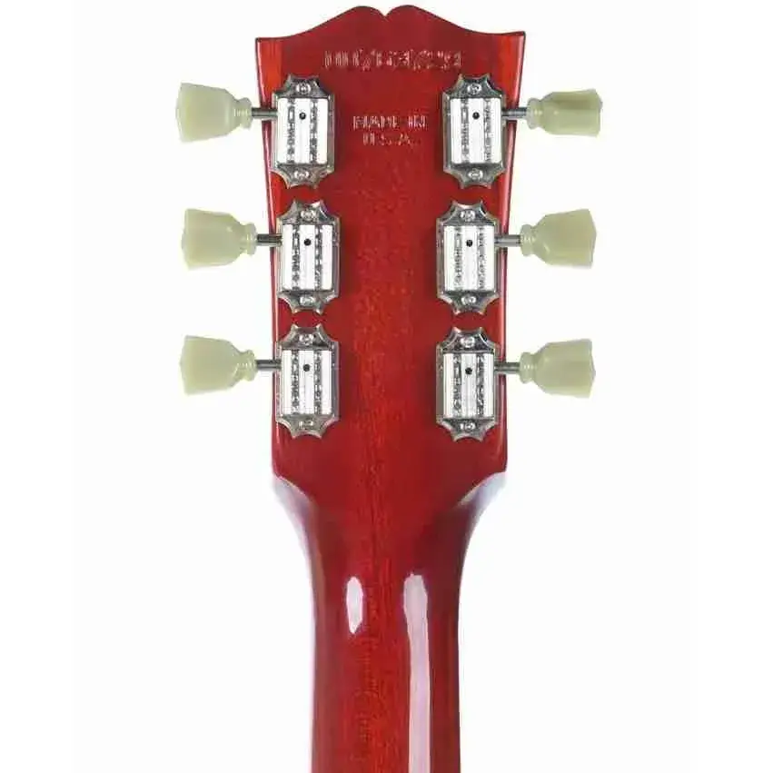
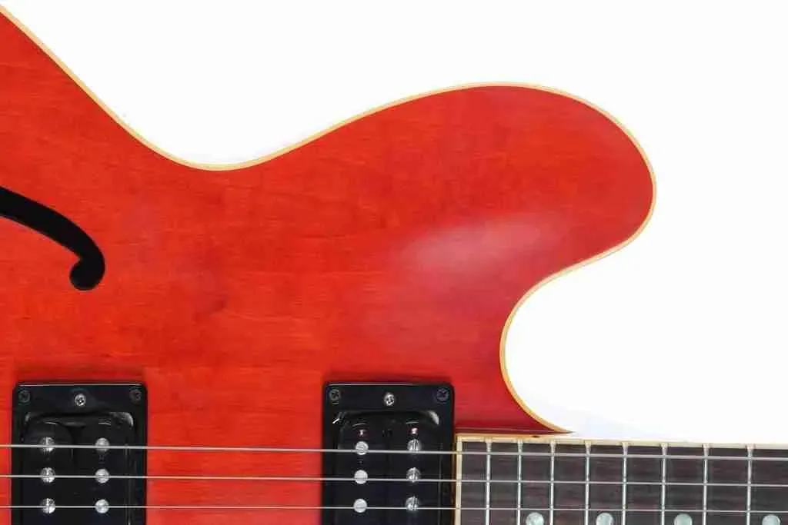
After only two years in production, the ES-333 was sadly discontinued in 2005, allegedly because it was taking too many sales from the more expensive ES-335. It was eventually succeeded by the ES-335 studio, which was reintroduced in 2013. Despite their short production run, the ES-333 sold well, and used examples can be found fairly easily today.
In recent years their values have increased, but they are still priced lower than the ES-335, and still represent a bargain for a USA made Gibson semi-hollowbody guitar.
"The 333 looks like a player's guitar, with its well-worn satin faded finish, and it plays like one too, with all the essential performance features of its more expensive cousins in the 335 family. The ES-333 is an unbeatable combination of looks, sound, and affordability." — Gibson product brochure
The ES-333 was available in four colors: Cherry Red, Sunburst, Faded Brown, and Natural. The body finish is thin satin nitrocellulose, and the neck is gloss.
The thin finish allows the maple woodgrain to shine though, adding to the vintage vibe. Some would argue that it allows the body to resonate better, giving a better tone. I'll leave that one up to you – but from an aesthetic point of view, I much prefer a thinner finish to a heavy gloss that coats a lot of new guitars today.
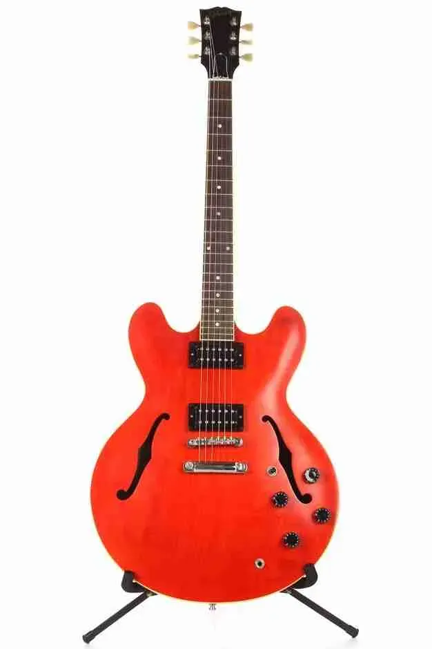
Cherry Red
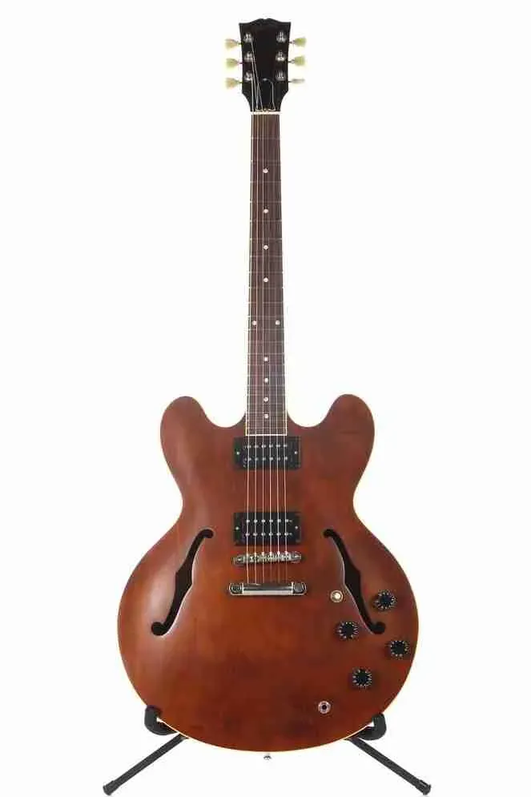
Faded Brown
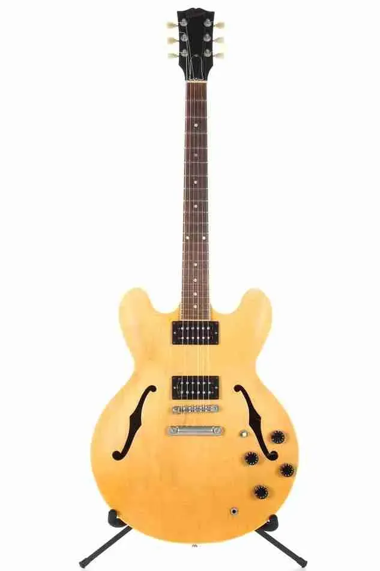
Natural
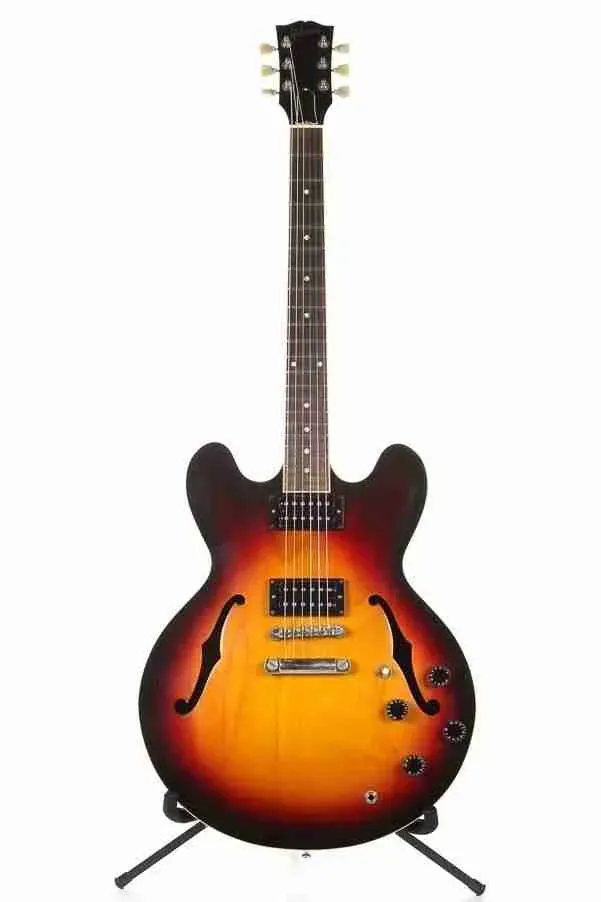
Sunburst
| Body | |
|---|---|
| Body shape | ES-335 |
| Top and back | 3-ply Maple/Poplar/Maple |
| Bracing | Maple |
| Binding | Single ply, cream |
| Finish | Satin nitrocellulose |
| Neck | |
|---|---|
| Material | Mahogany |
| Profile | 60's slim taper |
| Scale length | 24¾" (629mm) |
| Radius | 12″ (305mm) |
| Fingerboard material | Rosewood |
| Inlays | Dot, pearloid |
| Number of frets | 22 |
| Nut width | 11 11/16″ (43mm) |
| Hardware | |
|---|---|
| Finish | Nickel |
| Bridge | Tune-o-matic |
| Tailpiece | Stoptail |
| Tuning machines | Vintage deluxe, green buttons |
| Control knobs | Black, speed style |
| Switch tip | Cream or black |
| Electronics | |
|---|---|
| Neck pickup | 490R |
| Bridge pickup | 498T |
| Controls | Two volume, two tone, three way selector |
With the addition of a pickguard, nickel pickup covers and top-hat control knobs, the ES-333 can be made to look like an ES-335. The cream binding, thin finish and green tuners lend themselves very well towards a vintage look. The only thing missing is the traditional crown inlay on the headstock, but you can buy decals online that'll look good enough unless you look too closely.
The satin finish can be polished with a fine cutting compound, and buffed to a mirror shine with an automotive wax.
Check out this ES-333 next to a 1966 ES-335. Looks pretty good, doesn't it?
The rear access panel makes changing the pickups much easier. The 490 and 498's can be too hot for some player's tastes, and swapping to Classic 57's is a common modification.
Other electronic modifications include adding a coil split, or even adding a full varitone circuit, à la ES-345.
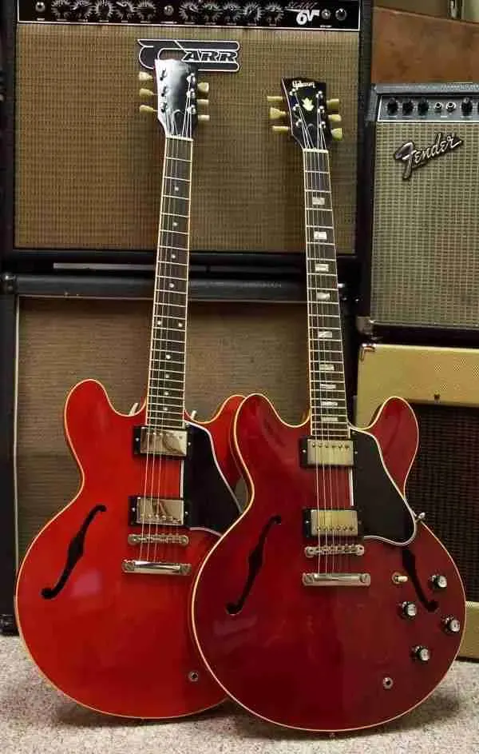
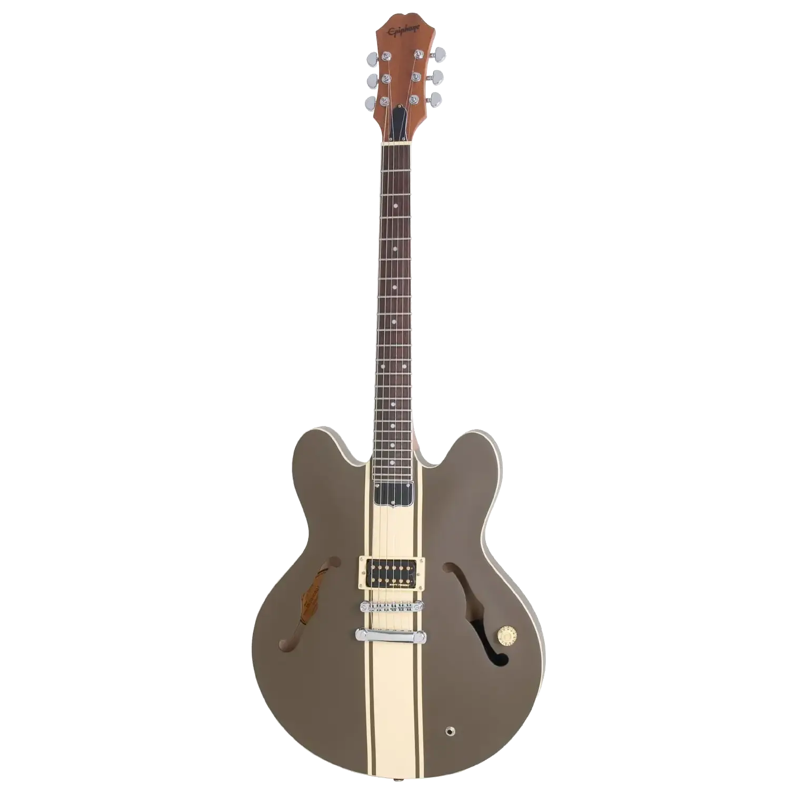
In 2003 Gibson released a production model of Tom DeLonge's signature model. It was quite different to the normal ES-333.
The guitar was finished in satin "Olive green", with a cream racing stripe and binding, and the headstock was finished with a wooden veneer. The minimalist theme of the ES-333 was taken a step further – there was only a single "Dirty Fingers" pickup in the bridge position, controlled by a single volume knob.
A cheaper Epiphone version was also released. This was made in China, but still used the Gibson Dirty Fingers pickup.
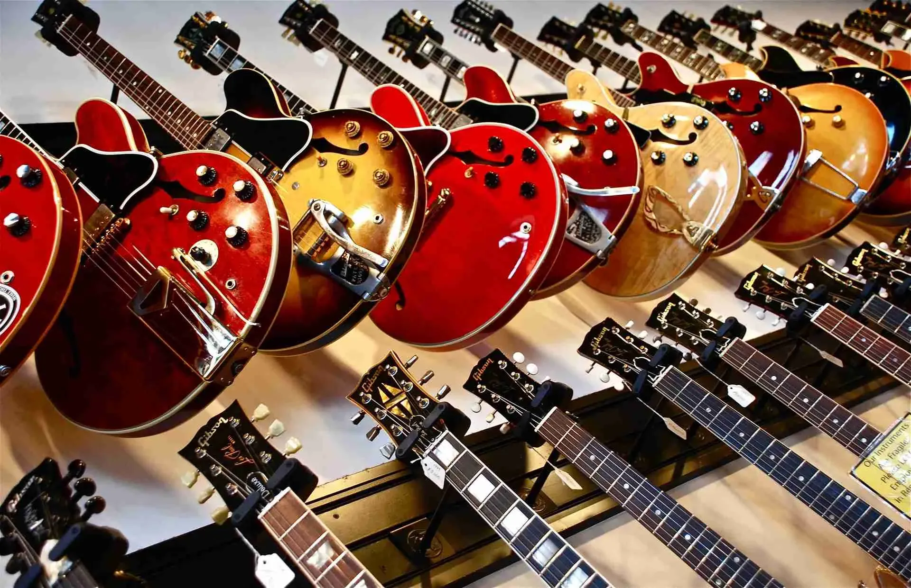
Despite their short production run, their relatively low price made the ES-333 a popular guitar, and can often be found for sale on online. The majority are in the USA, but they were sold worldwide, so finding one nearby is just a matter of time.
The best places to look are Reverb and eBay, but keep your eye on forums and social media groups, and even your local music store – you never know when one will pop up.
Prices vary $800 to $1400, depending on their condition and location. The Gibson Tom DeLonge model is much more expensive, expect to spend around $3000 to $4000.
Whichever one you get, you'll love it.